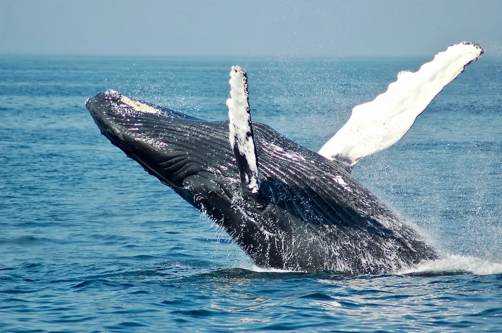

Gray Whale Migration: Watching Season in California
· By GoldenPath Guide Editorial Team
Winter and spring along the California coast bring a huge, humbling sound from the sea. Between November and April, gray whales that wintered in the warm lagoons of Mexico surge back north toward the Bering Sea of Alaska — a round trip of up to 10,000 miles. Timing your visit with this migration is one of the great wildlife spectacles California has to offer — the kind you sense more than see at first, a dark shape breaking the grey.
The Mendocino Whale Festival
The Mendocino Coast Whale Festival marks the peak of the spring return. Each year in March, it runs consecutively across four coastal villages — Mendocino, Little River, Fort Bragg, and Westport. For 2026, the festival is scheduled for March 2 through 16, as whales make their way north.
What Each Village Offers
- Week 1 — Mendocino. Mendocino Headlands State Park is prime whale-watching. Browse the village shops and galleries, visit the Ford House Museum in its old historic building, and fill a Mendocino wine glass. There's also a local chowder tasting and competition.
- Week 2 — Little River. Walk Van Damme State Park on a free docent-led valley trek, try the Fern Canyon Trail and Pygmy Forest, and join whale walks and sea-cave kayak tours led by local naturalists.
- Week 3 — Fort Bragg. Watch for whales from the dramatic lookouts along the Coastal Trail, then judge the chefs at the local chowder cook-off.
- Week 4 — Westport. This tiny village closes the festival with live music, a handmade craft market, and a 32-foot concrete whale sculpture built by a local outsider artist.
Best Ways to See the Whales
Gray whales pass the coastline steadily through March into May as they head north, so sightings are particularly likely over spring. On a sunny day, you can spot them from clifftop lookouts without leaving shore — watch for the spout and the raised fluke — the spray hangs for a moment in the cold wind before it's gone. But a whale-watching tour gets you closer, letting you hear the whale's breath alongside the splash of the water.
Southbound Versus Northbound: Timing by Month
The migration runs in two acts with different viewing odds. December through February carries pregnant females south to Baja's lagoons; whales travel far offshore and fast, so sightings run brief — a spout, a back, gone. March through May brings the northbound return, and mothers with newborn calves hug the coastline within a mile of shore, resting and nursing in coves. Counts off the Mendocino headlands peak from mid-March to mid-April at dozens of whales a day. December and January pair southbound spouts with elephant-seal pupping season at Año Nuevo, a strong combo trip. Late April into May thins the crowds while northbound stragglers still pass daily. November and late May sit outside the window — plan those months around seabirds and wildflowers instead of whales.
Boat Tours Versus Shore Watching
Shore watching costs nothing and often wins. Mendocino Headlands, Point Reyes' Chimney Rock and Point Loma's Cabrillo tidepool cliffs put observers 100 to 200 feet above the water with miles of visibility; a $30 pair of binoculars doubles the sightings. Boat tours run $45 to $70 for two to three hours out of Monterey, Dana Point and San Diego, and put passengers at water level beside the animals — the trade is motion sickness on open swell, so take preventative tablets an hour before boarding. Kayak tours near $80 approach quietly but keep legal distance; guides cut motors and let curious calves close the gap. Whale-watching festivals in Mendocino (March) bundle naturalist walks, chowder tastings and docent stations at headland posts. Skip midday boat departures when wind chop builds — the 9 a.m. sailing runs calmest and sightings log highest.
Gear, Safety and Photography Tips
Pack for wind 20 degrees colder than the forecast: a windbreaker, beanie and gloves turn a two-hour headland watch from endurance to pleasure. Polarized sunglasses cut surface glare and reveal backs and flukes below the chop. For photography, a 200mm-plus lens catches flukes at 300 yards; phone cameras handle spouts and close boat passes but not distant backs — shoot video, then pull stills. Keep 50 feet from cliff edges on headland trails; sandstone crumbles, and every year brings rescues. Check tide tables before combining whale watching with tidepools — minus tides expose the richest pools at Cabrillo and Fitzgerald Marine Reserve. Dogs stay leashed on most headland trails and off the boats. Log sightings with the local whale-trust hotlines; the counts feed migration research, and naturalists at festival booths explain individual fluke-ID catalogs.
Where Else to Watch: Point Reyes to San Diego
Beyond Mendocino, Point Reyes' Chimney Rock and Lighthouse points count hundreds of northbound whales weekly from mid-March through April, with free ranger talks on weekends. Monterey Bay boat tours run $45 to $65, and Dana Point's festival in early March pairs parades with two-hour sailings near $50. San Diego's Birch Aquarium whale-watching cruises ($70-plus) run December through April past Point Loma's light.